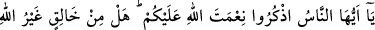
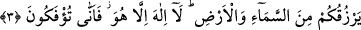

Sâib der ki:
Rengârenk nimetlere aldanmayız.
Rızkımızı kerem sofrasından yeriz biz.
Yine şâir der ki:
Rızık düğümünün çözülmesi, takdir eliyledir.
Sakın ola ki rızıktan şikâyet etme.
Allahım! Bize hayır kapılarını aç! Akıl sahiplerini rızıklandırdığın rızıklarla bizi
rızıklandır. Zira sen bütün kapıları açansın.
3. Ey insanlar! Allah’ın size olan nimetini hatırlayın; Allah’tan başka size gökten
ve yerden rızık verecek bir yaratıcı var mı? O’ndan başka tanrı yoktur. Nasıl
oluyor da (tevhidden küfre) çevriliyorsunuz!
“Ey insanlar!” Ey Mekkeliler! “Allah’ın size olan nimetini hatırlayın; Allah’tan
başka size gökten” yağmur “ve yerden” bitki olarak “rızık verecek” başka “bir
yaratıcı var mı?”
Nimet kelimesi Kur’an’da on bir yerde uzun “ ” ile yazılmıştır. İbn Kesir, Ebû Amr,
Kisâî ve Yâkub, bu “ ” üzerinde “ ” olarak durmuşlardır. Kelime masdar olarak
düşünüldüğünde “Allah’ın size olan in’am ve ihsanını hatırlayınız”; isim olarak kabul
edilirse “Allah’ın sizin üzerinizde mevcut olan nimetini hatırlayınız” demektir. Yâni
nimetin hakkını bilerek ve onu itiraf ederek ibadet ve taati, nimeti verene tahsis ederek
ona riâyet ediniz ve onu koruyunuz. Bu nimet, mal-mülk, mevki-makam gibi hârici bir
nimet olabileceği gibi sağlık, kuvvet gibi bedeni yahut da akıl ve zekâ gibi nefsî bir
nîmet de olabilir. Her hâlükârda nimetin hakkı korunmalıdır. Nimeti zikretmek nimeti
verene götürünce Allah Teâlâ istifhâm-i inkârî ile şöyle buyurdu: “Allah’tan başka size
gökten ve yerden rızık verecek bir yaratıcı var mı?” Yâni Allah’ın dışında O’ndan
başka bir yaratıcı yoktur. el-Es’iletü’l-müfhime’de der ki: Bu ayet Mûtezilenin “biz
kendi işlerimizi kendimiz yaratırız” görüşünü iptal etmektedir. Zira Allah Teâlâ burada
kendisinden başka yaratıcı olmadığını haber vermektedir.
“gökten ve yerden rızık verecek bir yaratıcı var mı?” Bu cümle yeni bir söz
başlangıcıdır. Hâlık kelimesinin başka bir sıfatı değildir. Çünkü bunun mânâsı hem
mugâyeret hem de rızık verme (râzikiyet) niteliklerine sâhib bir yaratıcının mevcut